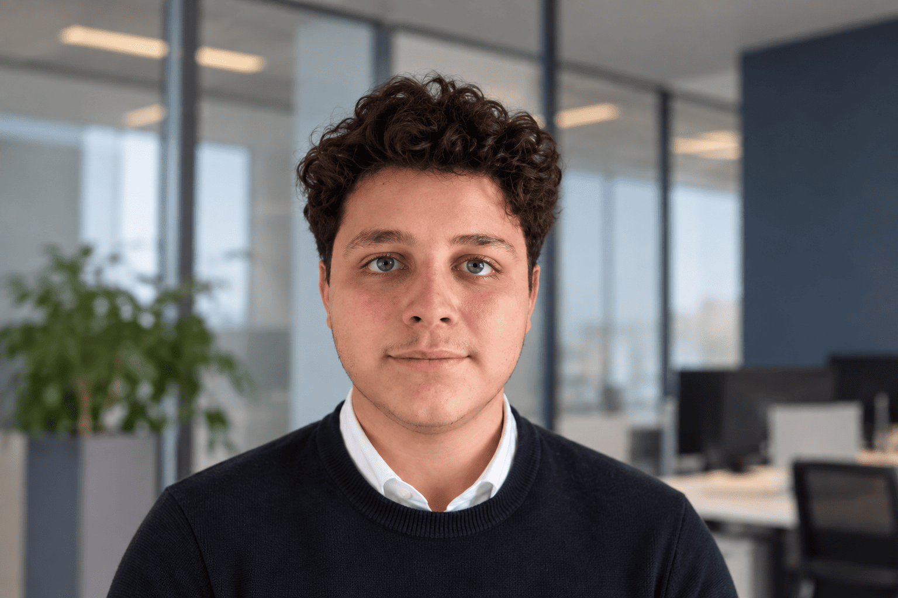

Studente al primo anno di Ingegneria Informatica a Roma Tre. Costruisco applicazioni web full-stack, sistemi con database e progetti pratici di networking, con l'obiettivo di lavorare su sistemi distribuiti e infrastrutture digitali complesse.

Ho concluso il percorso quinquennale all'Istituto Tecnico Superiore con specializzazione in Informatica e Telecomunicazioni, costruendo solide basi in sviluppo full-stack, progettazione di database e reti di calcolatori.
Oggi sono al primo anno di Ingegneria Informatica presso l'Università Roma Tre, dove sto approfondendo architetture di sistema, matematica applicata e programmazione avanzata, con l'obiettivo di specializzarmi in sistemi distribuiti, cybersecurity e cloud computing.
Durante il percorso scolastico ho lavorato su progetti concreti: piattaforme web con autenticazione, sistemi gestionali scolastici e applicazioni desktop, sempre curando sia il codice che la documentazione e la presentazione del lavoro.
Primo anno del corso di laurea, con focus su matematica applicata, architetture di sistema e fondamenti di programmazione avanzata.
Percorso quinquennale con progetti full-stack, reti di calcolatori e basi di dati. Sviluppo di applicazioni web con autenticazione e sistemi gestionali per l'ambiente scolastico.
Alla ricerca di un'opportunità di stage tra il primo e il secondo anno di università per applicare sul campo le competenze in sviluppo software e sistemi.
Piattaforma di digitalizzazione scolastica con login basato su ruoli, dashboard personalizzate e backend PHP/MySQL. Attualmente in fase di revisione prima di una nuova pubblicazione.
Applicazione di gestione attività scritta in Python, evoluta da interfaccia a riga di comando a interfaccia grafica con Tkinter.
Spazio riservato al prossimo progetto in sviluppo. Torna a trovarmi presto per scoprire cosa sto costruendo.
Sono aperto a stage, collaborazioni su progetti e semplici scambi di idee su tecnologia.